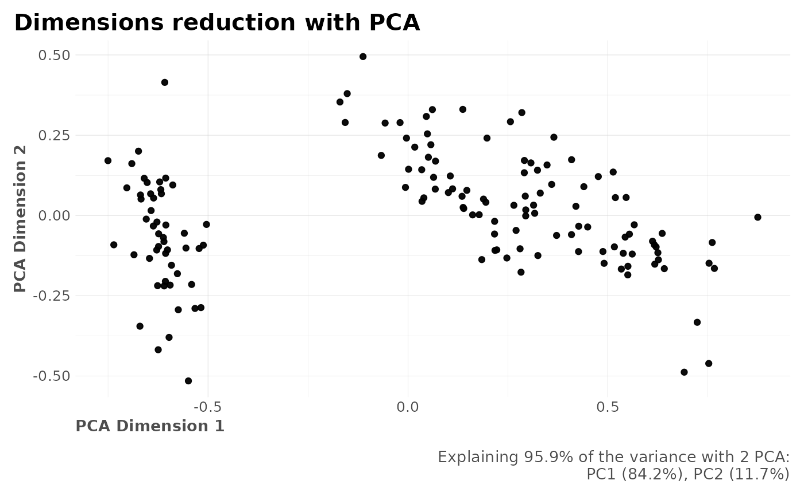
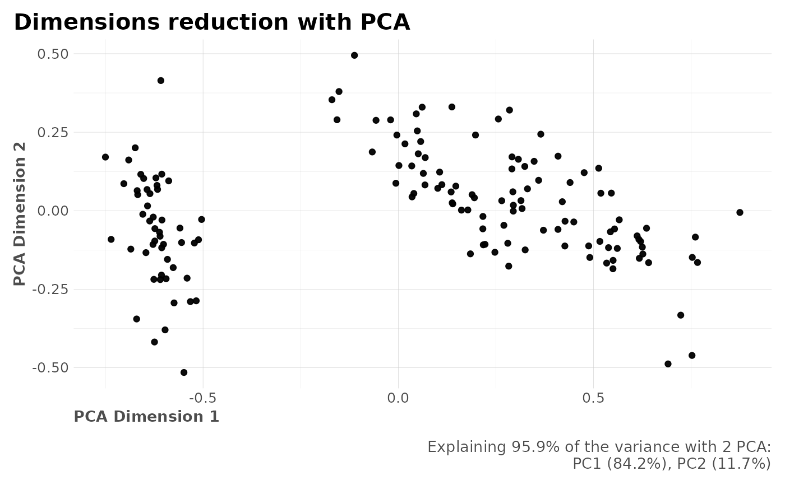

Principal component analysis or (PCA) is a method we can use to reduce high-dimensional data to a low-dimensional space. In other words, we cannot accurately visualize high-dimensional datasets because we cannot visualize anything above 3 features. The main purpose behind PCA is to transform datasets with more than 3 features (high-dimensional) into typically a 2/3 column dataset. Despite the reduction into a lower-dimensional space we still can retain most of the variance or information from our original dataset.
reduce_pca(
df,
n = NULL,
ignore = NULL,
comb = c(1, 2),
quiet = FALSE,
plot = TRUE,
...
)Arguments
- df
Dataframe
- n
Integer. Number of dimensions to reduce to.
- ignore
Character vector. Names of columns to ignore.
- comb
Vector. Which columns do you wish to plot? Select which two variables by name or column position.
- quiet
Boolean. Keep quiet? If not, print messages.
- plot
Boolean. Create plots?
- ...
Additional parameters passed to
stats::prcomp
Value
List with reduced dataframe and possible plots.
See also
Other Dimensionality:
reduce_tsne()
Other Clusters:
clusterKmeans(),
clusterOptimalK(),
clusterVisualK(),
reduce_tsne()
Examples
Sys.unsetenv("LARES_FONT") # Temporal
data("iris")
df <- subset(iris, select = c(-Species))
df$id <- 1:nrow(df)
reduce_pca(df, n = 3, ignore = "id")
#> $pca_explained
#> [1] 84.1715 11.7378 3.4503 0.6404
#>
#> $pcadf
#> # A tibble: 149 × 3
#> id PC1 PC2
#> <dbl> <dbl> <dbl>
#> 1 0 -0.628 -0.108
#> 2 0.00671 -0.621 0.104
#> 3 0.0134 -0.667 0.0511
#> 4 0.0201 -0.652 0.103
#> 5 0.0268 -0.646 -0.134
#> 6 0.0336 -0.532 -0.290
#> 7 0.0403 -0.654 -0.0114
#> 8 0.0470 -0.623 -0.0572
#> 9 0.0537 -0.674 0.200
#> 10 0.0604 -0.643 0.0674
#> # … with 139 more rows
#>
#> $plot_explained
 #>
#> $plot

#>
#>
#> $plot

#>